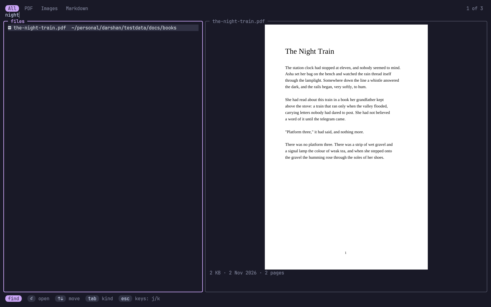
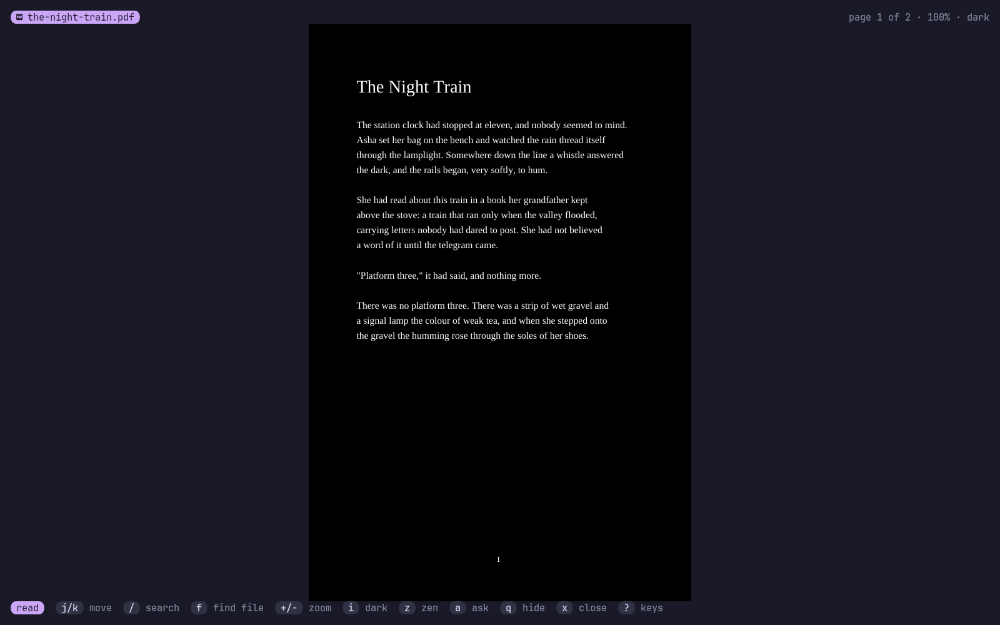
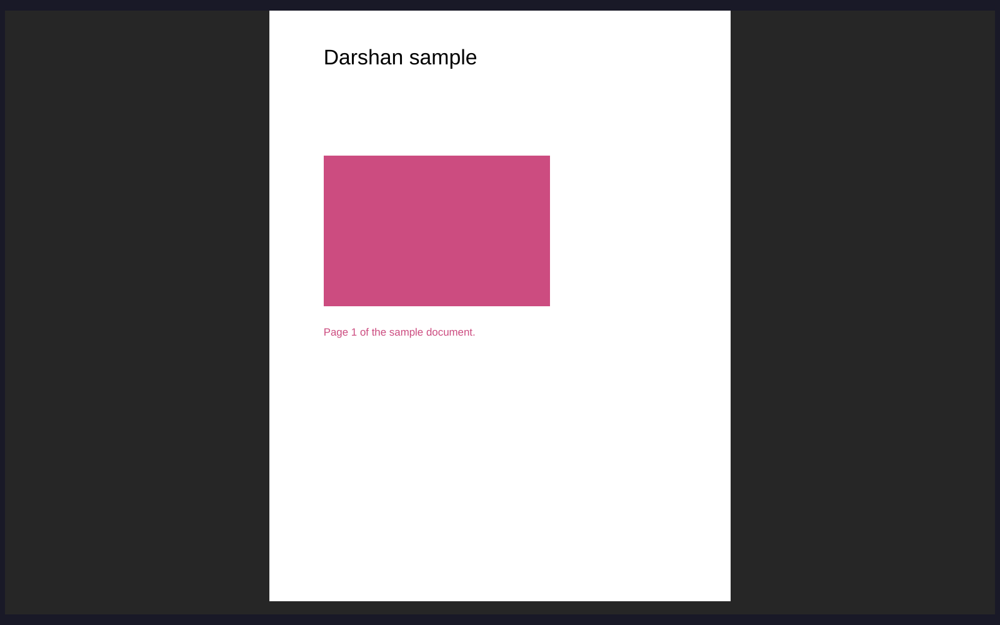

Darshan (दर्शन) is Sanskrit for "seeing": a view of something, taken in properly.
darshan opens in a tmux popup, inside your work. Close it and your file stays open, on the same page, until you say otherwise. Press one key and it fills the screen with nothing but the page. Ask an agent to show you a document and you can question it from right there: your question reaches the agent with the page you're on, and its answer shows beside the page.
#Features
- Real pages and pictures on kitty and Ghostty, inside tmux and its popups too; coloured blocks on other terminals. Markdown is drawn as styled text.
- Vim keys:
j k h l,gg G, counts (5j,12G),Ctrl+d/Ctrl+u,/withn/N,:for commands (a page number,q,bd,e FILE). - Search the whole system:
ffinds any PDF, image or Markdown file by name, with a live preview of the one you're on. Recent files come first. - The popup remembers:
prefix vopens it and closes it. Your file and page come back until you close the file withx. - Zen mode:
zswitches between the normal popup and the full screen with nothing but the page. - Dark mode:
iinverts pages and pictures, for reading at night. - It follows the file: when a file changes, it reloads and keeps your page.
- AI agents: an MCP server lets any agent show you a file and talk about it.
#Install
curl -fsSL https://raw.githubusercontent.com/Theyashsawarkar/darshan/main/install.sh | bashOr make install, or with TPM: set -g @plugin 'Theyashsawarkar/darshan', which binds prefix v. It needs poppler (pdftoppm, pdfinfo, pdftotext) for PDFs and fd for the search; darshan doctor checks. tmux needs set -g allow-passthrough on only for other tools: darshan writes straight to the client's terminal.
To make it the desktop's viewer, install packaging/darshan.desktop and xdg-mime default darshan.desktop application/pdf image/png image/jpeg. darshan open FILE shows a file in the running screen, a tmux popup, or from the desktop a kitty window of its own.
| Command | Does |
|---|---|
darshan [FILE] [-p N] | The screen, on FILE or what you left open |
darshan open FILE [-p N] | Show FILE from anywhere |
darshan popup | Open the tmux popup, or close it when it's open |
darshan search WORDS [--kind pdf] | Find files by name: one path a line |
darshan status | What's open |
darshan close | Close the open file |
darshan mcp | The MCP server |
darshan doctor | Check what it needs |
#Keys
Reading
| Key | |
|---|---|
j / k | Move down / up (next / previous page once the page is all shown) |
h / l | Move left / right when zoomed (else previous / next page) |
J / K | Move to the next / previous page |
Ctrl+d / Ctrl+u | Scroll half a screen down / up |
Ctrl+f / Ctrl+b | Scroll a screen down / up |
g g / G | Jump to the first / last page |
N G / : N | Jump to page (or line) N; a number before j, k, J or K repeats it |
/ | Search the document's text |
n / N | Jump to the next / previous match |
+ / - | Grow / shrink the zoom |
= | Reset to fit the whole page |
w | Toggle fitting the page's width |
i | Invert the colours of pages and pictures (dark mode) |
[ / ] | Switch to the previous / next file in the folder |
f / o / Ctrl+p | Search for a file on the whole system (with a preview) |
a | Open the talk with the agent that opened this file, to ask it something |
z | Toggle zen mode: the full screen, nothing but the page |
r | Reload the file (it also reloads by itself when it changes) |
y | Copy the file's path |
q / v | Close the popup; the file stays open for next time |
x | Close the file |
? | Show every key |
Searching for a file
| Key | |
|---|---|
Enter | Open the picked file |
Up / Down / Ctrl+j / Ctrl+k | Move through the results while typing |
Esc | Leave typing, then j, k, g g, G and Ctrl+d / Ctrl+u move (i types again; Esc again closes) |
Tab / Shift+Tab | Switch between all files, PDFs, images and Markdown |
Talking to the agent
| Key | |
|---|---|
Enter | Send your question, with what's on screen, to the agent |
Esc | Close the talk |
#AI agents
Add it once and every agent can use it:
claude mcp add darshan -- darshan mcp| Tool | Does |
|---|---|
view_open | Show the user a file (path, page, why) |
view_search | Find files anywhere on the system by name |
view_status | What's open, the page, the text on their screen |
view_next_question | Wait for the user's next question |
view_reply | Show an answer beside the page |
view_close | Close the file |
Asking. When an agent opened the file, a opens the talk beside the page. Your question goes with the file, the page and the text on your screen: to the agent if it's waiting in view_next_question, else typed straight into its tmux pane, so it arrives like a message from you. If that pane has dropped to a shell darshan won't type there; the question waits until the agent next asks for it. The document's text is marked as data, so words inside a PDF can't pose as your instructions. If the agent regenerates the file, it reloads where you were.
#Options
~/.config/darshan/config.toml:
roots = ["~/more-books"] # folders to search, beside home, other disks and system docs
exclude = ["archive"] # folder names to skip, beside node_modules, .git, .cache and the liketmux options, before TPM's run line:
| Option | Default | |
|---|---|---|
@darshan-key | v | The popup key after the prefix (none binds nothing) |
@darshan-width | 90% | Popup width |
@darshan-height | 88% | Popup height |
@darshan-title | darshan | Popup title |
@darshan-launcher | Your own popup command, given display-popup's arguments |
Colours follow varna when it's there.
#How it draws
PDF pages become PNGs through poppler's pdftoppm (cached in ~/.cache/darshan). They reach the terminal by kitty's graphics protocol, written to the tmux client's own terminal, and show through Unicode placeholders, which any text layout carries: that's why they work in popups, where viewers that draw directly (tdf, for one) show nothing.
Not yet: highlighting a match on a PDF page (/ jumps to the page), animated GIFs (the first frame shows), pictures inside Markdown.